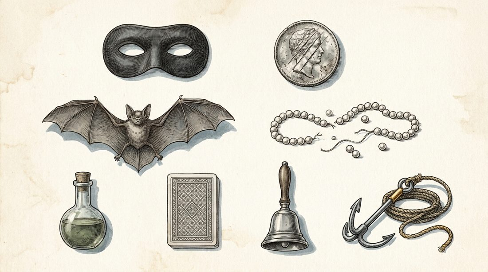
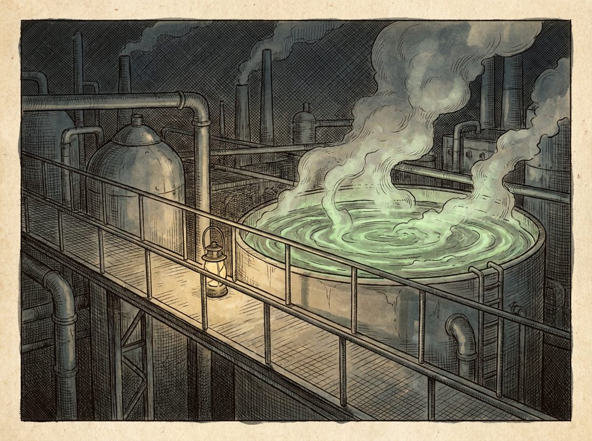
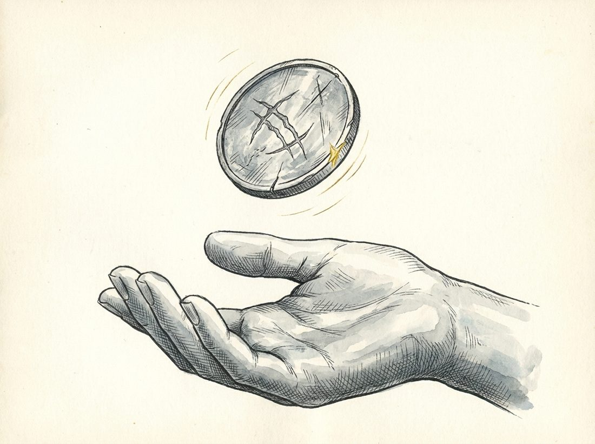
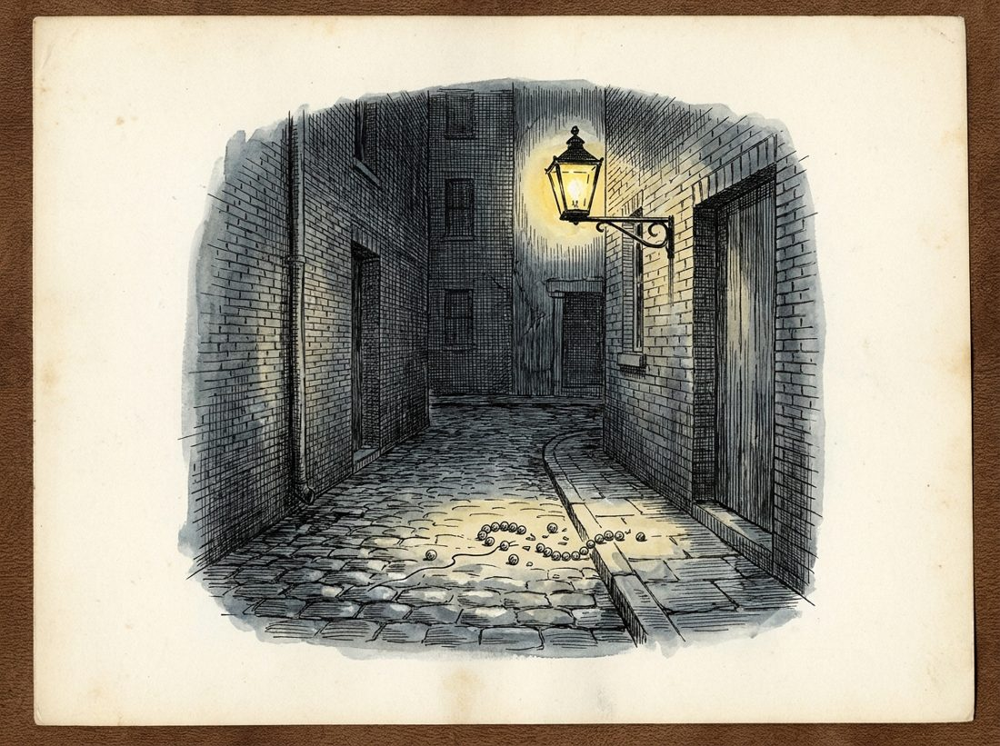
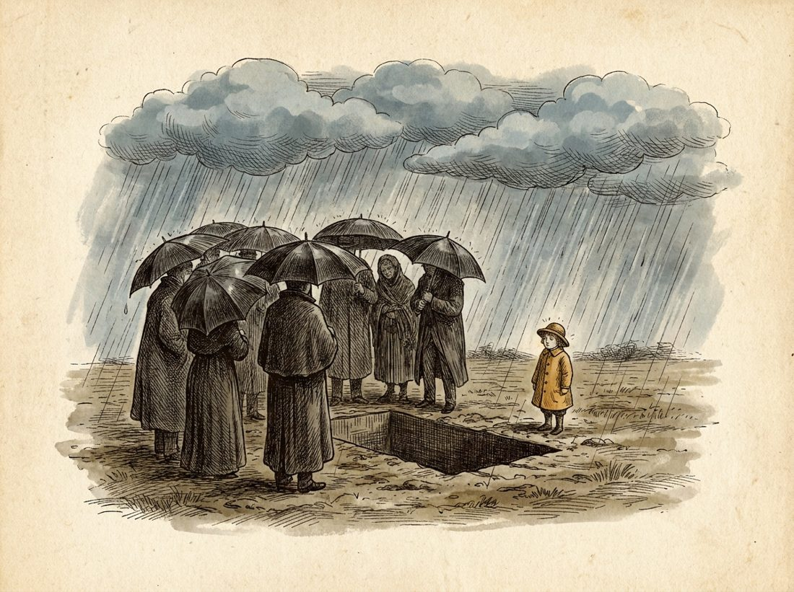
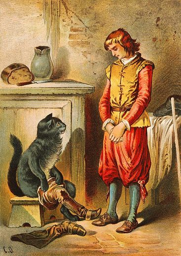
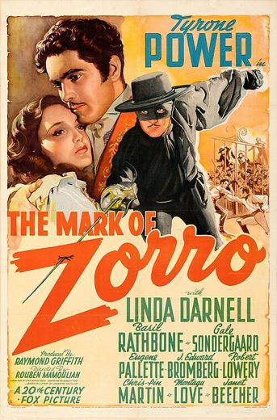

Neurons inside AI models can define memes. They find Batman's core canon and trace films back to their source comics, about as well as counting words does
Memetics stalled because nobody could say where one meme ends and the next begins. We defined a meme as whatever makes a single neuron inside an AI model fire, traced the memes that make up Batman across 80 years, checked them against a second model built by a different company, and ran three pre-registered experiments on identity, heredity and selection. A robustness review then tested every claim against stronger controls, including plain word counts. This page gives the corrected results.

Batman's memes as specimens. Illustration generated for this page; no character likeness.
Phase 1 · MeasuringBatman has a real core canon: 56 memes in at least 29 of the 32 works, where random sets of ordinary films have none. The strongest memes have twins in a second model (correlation 0.82), but most of them detect names and words. Only a few survive rewording.
Phase 2 · ExperimentsFilms sit closer to their documented source comic than to other comics, even without names, in both models. The result holds in 99.6% of 30,240 ways of running the test. Plain word overlap finds the sources as well, and only Llama's neurons add anything beyond shared words. Without names, Batman's canon scores Batman no higher than other superhero films. The selection test had too little power to find anything.
Side experiment · ImagesAn exploratory test of vision-model neurons on posters and covers. It has its own repository and is not part of this study.
2 phases completeRevised after a robustness reviewUpdated
Phase 2
Three experiments: identity, heredity, selection
With a way to measure memes, can we test the three things a science of memes needs? Each experiment was written down, with the result that would count as failure, and attacked by three independent AI reviewers before it was run.
Heredity is the clearest result. Films and games sit closer to their documented source comic than to other comics, even with every name removed, in both models (exact p = 0.0026 and 0.00017). The pattern holds in 99.6% of 30,240 ways of running the analysis. But plain word overlap on the same texts finds the sources as well: 11% of comics beat the source on TF-IDF, against 16% on Qwen's neurons and 10% on Llama's. The pre-registered test of whether the neurons add anything beyond shared words fails for Qwen, the primary model, and passes for Llama. So the films carry their source's plot content, and neurons detect it about as well as word counts do.
The identity test failed as stated. Without names, Batman's canon scores Batman stories no higher than other superhero films. That null comes from the way the canon was scored. A word-count centroid on the same name-free texts still separates Batman from the superhero films (AUC 0.80), mostly on crime-city words. The selection test found nothing. With 15 early works it had little power, so the null says little about whether selection happens.
E1 · Identity
Is there a Batman essence without names?
Prediction failed
Without names, the canon tells Batman from ordinary films (AUC 0.90 and 0.95) but not from other masked heroes (0.52 and 0.54, chance 0.50). A word-count centroid does separate them (0.80), so the null belongs to the canon score.

E2 · Heredity
Do films inherit their source comic's memes?
Supported in both modelsBeyond words: Llama only
Only 16% (Qwen) and 10% (Llama) of eligible comics beat the documented source, against 38% to 47% by chance. Plain word overlap does as well (11%).

E3 · Selection
Do memes ride on hits?
Not detected
The memes of popular early works did not spread further than those of obscure ones (ρ = 0.25 and 0.00, p = 0.35 and 0.58). The test had about a 27% chance of detecting a true correlation of 0.3.
E1 · What makes it Batman, once the names are gone?
Question
Do the memes in nearly every Batman story still mark a story as Batman when every name is replaced by a neutral code ("X1 interrogates X2")?
Prediction
AUC of at least 0.80 against the 8 masked-hero and superhero films, with a lower confidence bound of at least 0.65.
Result
0.52 (Qwen) and 0.54 (Llama), inside the label-shuffle null. With names it is 0.996.
Controls
A TF-IDF centroid on the same name-free texts, pre-registered but not run at first, scores 0.80 (95% CI 0.64 to 0.93). Summary length alone scores 0.76: Batman summaries tend to be longer.
Without names, the canon separates Batman from ordinary stories but not from other masked heroes
AUC: the chance that a name-free Batman story carries more of Batman's canon than a story from the comparison group. 1 = always, 0.5 = a coin toss. Lines are 95% bootstrap intervals. With only 8 hero films, the interval for that group is wide.
Qwen3-8BLlama 3.1 8B
The null comes from the way E1 scored the canon. Each story was scored by the share of Batman's canon neurons present in it, and presence was set by ordinary films that contain no superheroes. Neurons for the genre itself then count as present in superhero films too. A plain word-count centroid on the same name-free texts separates Batman from the hero films at 0.80, and still at 0.76 with the bat, cape and clown sentences dropped. Many of the words that contribute most are Batman's crime-city vocabulary: police, asylum, henchmen, prison, the mayor and the commissioner.
On the canon score, Spider-Man, Daredevil and Superman out-score most Batman stories
For each hero film, the share of name-free Batman stories it matches or beats on Batman's canon. Above 50% means the film scores higher than a typical Batman story. Each film is a single summary, so these are noisy.
Qwen3-8BLlama 3.1 8B
Word counts rank them differently. On the TF-IDF centroid, Daredevil matches or beats half of the Batman stories, Spider-Man 31% and Superman 6%.
The name-free core: the superhero template
The canon neurons that still fire in at least 70% of name-free Batman stories, named from the sentences they fire on most.
The core is close to the textbook definition of a superhero, which Coogan gives as a mission, powers and an identity: here a self-imposed mission, a costume and a secret identity. Batman shares it with the other masked heroes, so it says what kind of story Batman is. It does not say what makes him Batman. Of the "Billionaire Vigilante Orphans" family, the later superheroes carry the most of Batman's canon on this score; the older masked heroes (Zorro, The Bat, the Green Hornet) carry less than most Batman stories.
E2 · Do films inherit their source comic's memes?
Question
Nine films and games adapt a comic in our set. Do they carry more of their source's optional memes (those in 2 to 16 of the 32 Batman works) than other comics', with names removed?
Prediction
Fewer comics beat the documented source than chance, one-sided p < 0.05, checked against comics that resemble everything, comics published after the film, and placebo films. A separate, weaker failure: if the effect disappears once shared words are removed, the neurons add nothing beyond words.
Result
16% (Qwen) and 10% (Llama) of comics beat the source, against 47% under the planned null; exact p = 0.0026 and 0.00017. Word overlap alone gives 11%. With shared words removed, Qwen's effect is no longer significant and Llama's is.
In both models the real source comic sits at or near the front for most films
Each row is an adaptation; each grey slot is one comic it could have drawn from (only comics published no later than the film). The dot shows where the documented source ranks by inherited memes, name-free.
Qwen3-8BLlama 3.1 8B
Names carried less of this than expected. With names left in, the share of comics beating the source falls only from 16% to 12% (Qwen) and from 10% to 8% (Llama). Most of the inheritance is in what happens to the characters.
The pattern itself is very robust. An independent rebuild from the raw activations gives the same numbers. Across 30,240 ways of running the analysis, which vary the presence bar, the frequency band, the source rule, the hub adjustment, the time rule and more, p is below 0.05 in 99.6%, and every failure has the hub adjustment switched off. Dropping any one, two or three adaptations, or any one comic, never breaks it under the planned null. Under a stricter null that only swaps comics within an era, some of Qwen's leave-outs do fail (37 of 84 triples). Llama's never do.
Plain word overlap finds the source as well as the neurons do
The same statistic on the same name-free texts, with the neurons replaced by two word counts that use no model: TF-IDF overlap between texts, and which words a text contains. Lower means closer to the documented source. Under each label: exact p, and how many of 7 sequels found their prequel without names (the bar was 5).
neuronsword counts, no modelchance, under three nulls
What the films inherit is plot content, and word counts see it too. TF-IDF puts 11% of comics ahead of the source and word presence 17%, against 16% and 10% for the neurons. Both word measures also pass the sequel control (6 of 7), which Qwen's neurons miss (4 of 7).
The pre-registration set a separate, weaker test: the neurons should still find the source after removing what word overlap explains. This was planned but not run at first; it has been run now. For Qwen, the primary model, the neurons fail it (p = 0.25 after removing TF-IDF, 0.11 after word presence, 0.09 after both). For Llama they pass (p = 0.033, 0.014 and 0.010). TF-IDF keeps its signal with the neurons removed (p < 0.001 in both models). So Llama's neurons add a little beyond words, and Qwen's add nothing we can detect.
Chance was overstated. The 47% comes from relabelling the comics freely. Relabelling only with comics that existed at the time gives about 42%, and relabelling only within an era about 39%. The result holds against each (Qwen p = 0.011 and 0.026; Llama p = 0.0006 and 0.0014), but without the three Killing Joke adaptations Qwen's within-era p rises to 0.083.
The placebo check had a bug. Two of the 11 placebo films, the 1943 serial and Batman '66, came out before every comic in the set, so they had no eligible comic and were scored a perfect 0. That pulled the placebo average down to 38% (Qwen) and 39% (Llama). The 9 valid placebo films average 46% (Qwen) and 47% (Llama), and the real adaptations sit below all 9. This departs from the plan, which named all 11; as written, that criterion fails.
Every robustness check
Positive control: do sequels find their prequel without names?
If the method has power without names, each sequel should rank its prequel among the top 2 earlier screen works. The bar was 5 of 7: Qwen reached 4, Llama 5 (with names, 7 and 6). TF-IDF and word presence both reach 6.
E3 · Do memes ride on hits?
Question
Do the memes of popular early works (before 2000) turn up more in later works than the memes of obscure ones?
Prediction
Positive rank correlation between an early work's popularity (Wikipedia views per month) and how far its memes spread, with adaptations removed so fame from being adapted can't drive it.
Result
ρ = 0.25 (Qwen, p = 0.35) and 0.00 (Llama, p = 0.58). On the original texts, with names, both are negative (−0.32 and −0.50).
No link between an early work's popularity and how far its memes spread
Each dot is one of the 15 Batman works before 2000 (Qwen3-8B, name-free). Up means its memes reappear in later works more than their earlier frequency predicts, after accounting for the work's year, length and how typical it is.
With 15 works, only a strong effect could have shown up. A simulation of the same permutation test on 15 works gives it a 27% chance of detecting a true correlation of 0.3, and 54% for 0.5. So this is a weak null, and it says little either way about whether popularity matters. The earlier placebo, which used the ordinary films as the outcome, gave every meme nearly the same score by construction, so it has been dropped. Pageviews are also measured today, after decades of adaptation. A real test of selection needs a bigger lineage and success measured at release.
How we tried not to fool ourselves
Written down first. Each experiment's prediction and the result that would count as failure were written down before it was run. The saved files' timestamps cannot confirm that order on their own.
Attacked before running. Three AI reviewers were asked to break each design. They found real problems, and most of the safeguards below came from them.
Truly name-free texts. A rewriter first replaced names with role words, but called Batman "the vigilante" more than 300 times and Spider-Man "the hero". That leaks identity, so we used the rewrite only to find the names, then replaced each with a neutral code.
No marking our own homework. The films that set the presence bar are never scored; they are split in half 20 times.
Breaking circular loops. E3 drops every adaptation from the later works, because a comic's fame partly comes from being adapted. E2 counts only comics published no later than the film.
Controls that could fail. Placebo films, a label-shuffle null, a sequel positive control, word-count comparators, and dropping every sentence that still mentions bats, capes, clowns or caves.
Two models. Every result was rerun in Llama 3.1 8B; all three verdicts agree. The main difference: only Llama's neurons add anything to E2 beyond shared words.
Checked again afterwards. A robustness review rebuilt E2 from scratch, ran it 30,240 ways, and tested the Phase 1 claims against stronger nulls. Its scripts and outputs are in the repository.
Where we departed from the plan. Three pre-registered parts were not run at first and have been run now: the word-count controls for E1 and E2, and E2's beyond-words test. The E2 placebo check now uses the 9 valid placebo films, not the 11 in the plan. And E2's frequency band and hub adjustment were chosen after a simpler heredity test in Phase 1, on whole meme profiles, had failed. The 30,240-way multiverse is the check on that choice.
What this can't tell you
Whether neurons see more than words. On these texts, word counts find the source comics as well as the neurons do. Qwen's neurons add nothing detectable beyond them, and Llama's add a little.
What makes Batman Batman. The canon score can't separate him from other superheroes without names. Word counts can, but mostly on crime-city vocabulary. Neither is a definition.
Anything about selection. E3 had about a 27% chance of detecting a true correlation of 0.3.
How stories were told at the time. Every text is a 2020s Wikipedia plot summary in one house style, so shared wording between summaries can carry part of the heredity signal.
How general this is. One franchise, 9 adaptations, 12 comics and two 8B models at 4 bits.
What comes next
The aim is to say what Batman is, trace the shared history between Batmans, see when Batman mutates and which mutations catch on, and find Batman-like things across culture. New pre-registered experiments are being designed for each. None has run yet.
Neurons against the alternatives. A head-to-head of neurons, keywords, embedding vectors, topic models and an LLM reading the texts, scored on accuracy and cost.
Tests where shared wording can't carry the answer. Vocabulary drift over time, the same stories across languages, and stories with planted memes whose lineage is known in advance.
A fresh lineage. Shakespeare's plays and the works that descend from them, with the analysis fixed in advance.
Mutation and selection. Which changes to Batman catch on, compared with a neutral model of copying.
The Batman family across culture. A scan for billionaire vigilante orphans far beyond the 13 relatives here.
Hypotheses worth testing
Some claims from marketing practice about how memes behave could be tested directly with a neuron-level measure.
The Lindy effect: the longer a meme has survived, the longer it will last. Test: does a meme's age in the lineage predict whether it appears in the next era?
Nostalgia cycles: faded memes return after about 30 years and feel new. Test: find memes that vanish and reappear, and check whether the gaps cluster near 30 years.
Memeplexes: some memes travel as a bundle. Test: which memes are gained and lost together along the tree?
Optimal distinctiveness: the hits sit just past the familiar. Test: plot success against a work's meme distance from its ancestors and look for an inverted U.
Phase 1
Measuring memes
Can a single neuron be a meme? We let Qwen3-8B read Wikipedia plot summaries of 32 Batman works, 13 relatives and 69 ordinary films, and kept every neuron that fires far more for Batman than for ordinary films. A later robustness review tested these results against stronger controls. The core canon held up. The claims about agreement between models and about ideas rather than words came out narrower.
0
neurons present in at least 23 of 32 works when random sets of 32 ordinary films stand in for Batman. Batman has about 1,500 (Qwen) and 1,900 (Llama). The core canon is real.
0.82
How closely Llama's matching neuron tracks Qwen's, for the 33 strongest memes; random neurons matched for sparsity reach 0.40. Most of the 33 detect names or words, and word-like neurons that are not memes have twins about as good.
0.73
Agreement between the two models on the meme grid, as Cohen's kappa (1 = identical, 0 = chance). Random neurons matched on sparsity, layer or word-likeness score 0.35 to 0.57.
11 of 31
named memes still fire when their sentence is reworded with almost no words in common. Another meme's rewording passes the same bar 16% of the time, so about 5 would pass by chance.
What does a story need to be Batman?
A meme is canon if it appears in nearly every Batman work. Of 14,843 memes, 56 appear in at least 29 of the 32, from the 1943 serial to The Batman (2022). We call a meme Batman's own if no more than 3 of the 13 relatives carry it; the rest he shares with other heroes.
The canon is a real property of Batman. When random sets of 32 ordinary films stand in for the franchise, scored the same way, not one neuron is present in even 23 of them. The number of memes is less fixed. The same procedure finds 24,732 in Llama and 5,641 in Qwen3-1.7B, so the count belongs to the model and the thresholds as much as to Batman.
Batman's ownshared with other heroeshover a meme for what its neuron fires on

The origin woundMust have, 32 of 32. Shared with other heroes.The secret identityMust have, 30 of 32. Shared with Zorro and the Pimpernel.Alfred, the butlerMust have, 32 of 32.BatsUsually there, 24 of 32.

A funeralOptional, 9 of 32.Two-Face's coinOptional, 9 of 32.
Illustrations generated for this page. Most must-have memes are characters and places (Alfred, Robin, the Joker, Selina Kyle, Gotham, Wayne Manor); a few are story patterns (the origin wound, the double life, taking up the mantle). Phase 2 shows that once names are removed, only the shared story patterns remain.
Almost every Batman carries the whole canon, except Joker (2019)
Share of the 56 must-have memes in each Batman work, by year.
From 1966 on, most works carry 90 to 100% of it. The two lowest are the stories centred on the Joker rather than Batman: Joker (2019) and The Killing Joke.
The modern superheroes carry much of Batman's canon; most other masked heroes carry little
Share of Batman's must-have memes found in each relative, oldest first.
Ancestors written before 1939 carry at most about a fifth of the canon; Spider-Man carries four-fifths. Date is not the whole story: The Shadow (1994) carries 25% and The Green Hornet (2011) 18%.
How memes spread through the lineage
Each row is an optional meme; each dot is a Batman work that carries it, placed by year. The large dot is its first appearance in this corpus.
Taking in an orphan as a ward is there from the 1943 serial and keeps coming back through the camp-leaning films.
The vat of chemicals first appears in 1988 (The Killing Joke and A Death in the Family) and spreads to the 1989 film, the Arkham Asylum and Arkham Knight games, and White Knight.
Ra's al Ghul arrives with Hush (2002) and appears in Batman Begins, The Dark Knight Rises and every Arkham game.
How much do the two models overlap?
Qwen3-8B (Alibaba) and Llama 3.1 8B (Meta) were trained separately, on different data, with different vocabularies and layouts. We compared them at three levels.
Compare Qwen3-8B with
Overlap depends on how strong the meme is
Median correlation between each Qwen meme and its best match in Llama 3.1 8B, over 3,700 sentences, by how strongly the meme marks Batman. The strongest 33 were picked by strength alone.
What to make of it
The strongest memes have near-identical twins: 70% of the top 33 have a twin above 0.7. Weak memes mostly don't. Across all 14,843, the typical twin is at 0.40, barely above neurons that aren't memes (0.36).
Some match is guaranteed, because each twin is the best of 917,504 Llama neurons; shuffling the sentences shows how much (0.14).
Most of the strongest memes detect names. By our reading, 24 of the top 33 are name or place detectors, and the best single word reproduces their firing pattern at 0.94. Word-like neurons that are not memes have Llama twins about as good (0.86). With names removed, the same twin pairs fall to 0.14.
Concept memes do better. For the 27 memes labelled as concepts, twins reach 0.62, against 0.46 for neurons matched on word-likeness (p = 0.001). That edge holds on the original texts only; without names it is gone (0.34 against 0.38).
The grid and the trees need the same care. Random neurons are absent from most works, so random pairs matched for sparsity agree on 89% to 92% of cells, mostly by both being empty. That is more than the memes' 87%. Kappa corrects for that: 0.73 for the memes against 0.35 to 0.57 for the random sets. The trees agree at 0.98, but any two ways of measuring these texts agree closely. Random non-meme neurons give 0.90 to 0.93 between the models, and TF-IDF against LSA gives 0.92. With TF-IDF distances removed, the meme trees still agree at 0.92. Controlling for summary length and meme count leaves 0.90 to 0.98, depending on how the control is set up.
Same idea, different words
Counting words treats "revenge" and "vengeance" as unrelated and sees nothing in "make them pay". A neuron that tracks the idea should fire for all three. We found each model's revenge neuron from the 41 corpus sentences that use revenge words, then tested it on sentences it had never seen.
Llama's revenge neuron fires hardest on the sentence with no revenge word at all, and picked the revenge sentence over its harmless twin in 10 of 12 new pairs. It also beat two harder sets of controls: sentences about harm with no revenge (AUC 0.87) and vows with no revenge (0.79). Qwen's treats "revenge" and "vengeance" alike, but without those words it was no better than a coin toss. Each model's unit was picked from 50 candidates, and the two units fire on quite different corpus sentences (r = 0.39). So this is one good unit in one model.
We also reworded the top sentence of every named meme so it shares almost no words with the original (no content words for 28 of 31; three keep one common word: "let", "family" or "company"). A filled dot means the neuron fired more on the rewording than on any of ten everyday sentences.
Four memes survive in both models: a funeral, Two-Face's coin flip, the secret identity and the joke. In Qwen, every character meme except Harvey Dent fails once its name is gone; Llama's twins for the Riddler and Jason Todd survive.
The bar is lenient. A neuron also clears it on another meme's rewording 16% (Qwen) to 18% (Llama) of the time, so about 5 of 31 would survive by chance. Qwen's 11 beats that (p = 0.002); Llama's 9 does not clearly (p = 0.08). Only Qwen's funeral and coin neurons, and six of Llama's, fire more on their own rewording than on any other meme's. Even the funeral rewording keeps the funeral's vocabulary: mourners, an open grave, a coffin. So a few units carry an idea across rewording. Most do not.
The Bat-genome: 31 memes across 80 years
Each row is one meme. A filled cell means its neuron fired for that work more strongly than for 68 of 69 ordinary films. Hover a cell for the sentence that fired it.
Whose neurons
Flip between models: most of the grid stays put.
meme presentabsentdashed line: nothing in the corpus between 1966 and 1986
The family tree
Works with similar meme fingerprints are joined first (neighbour-joining). It wasn't told dates, creators or eras; colours were added afterwards. The drawing shows the order of branching, not distances.
Every tree puts the three Arkham games on their own branch and Batman v Superman beside Superman. Every model pairs The Killing Joke with Joker (2019), which borrows the comic's failed-comedian origin. Qwen gathers a camp branch (Batman '66, Batman & Robin, The Lego Batman Movie, Batman Ninja); Llama gathers the grounded crime branch (Year One and The Long Halloween with the Nolan films and The Batman). Branches follow tone more than date.
The trees do not recover documented sources. Across the 9 adaptations, the real source ranks 5.4 (Qwen) and 5.3 (Llama) of 12 on average, close to the 5.8 expected by chance. TF-IDF puts it at 2.9, and random non-meme neurons at 3.2 to 4.3. Phase 2's heredity test, which looks only at optional memes, does better.
Does the "Billionaire Vigilante Orphans" family hold up?
The Creativity talk puts Batman in a family with Puss in Boots, the Scarlet Pimpernel, Zorro and Iron Man. Here's which of Batman's memes the neurons find in each.

Puss in Boots1697 · Offterdinger, public domainThe Scarlet Pimpernel1905 · 1908 edition, public domainThe Bat1926 · lobby card, public domain

The Mark of Zorro1940 · poster, public domain
The secret identity is the shared gene: it fires for the Pimpernel, Zorro and Iron Man. Puss in Boots shares nothing beyond one weak, spurious hit. Measured on all 14,843 memes, the lineage claims fare like this:
Twin neurons, side by side
The sentences each neuron fires on most: Qwen3-8B on the left, its best match in Llama 3.1 8B on the right.
What this can't tell you
That memes are the same in every model. The strong twins are mostly shared name and word detectors. Concept memes beat word-matched neurons, but only on texts with names.
That neurons track ideas in general. A few units carry an idea across rewording (the funeral, the coin flip, the secret identity, the joke, Llama's revenge unit). Most do not.
How many memes Batman has. The count depends on the model and thresholds: 14,843 in Qwen3-8B, 24,732 in Llama 3.1 8B and 5,641 in Qwen3-1.7B.
Exactly what each neuron is for. The labels passed a blind test (79% correct) but were never checked by steering.
Who descends from whom, from the trees alone. The trees group works by tone, and they do not recover documented sources.
How it was set up
Texts. Wikipedia plot summaries, first 40 sentences each, 3,700 sentences: 32 Batman works (13 films and serials, 12 comics, 4 animated films, 3 games), 13 relatives, 69 ordinary films. Three works were dropped for having summaries under 8 sentences.
Models. Qwen3-8B (main), Llama 3.1 8B Instruct (independent check), Qwen3-1.7B (same family), all at 4-bit on a MacBook.
A neuron. One channel of a feed-forward layer, each end (positive, negative) counted separately: 884,736 in Qwen3-8B. An address like L13·8608+ is layer 13, neuron 8,608, positive end.
Present in a work. The work's three strongest sentences beat 68 of 69 ordinary films. 18,485 neurons cleared that in at least 6 Batman works, merged into 14,843 memes. At a matched bar, Batman has 1.8 times as many such neurons as random sets of 32 ordinary films (Llama 2.4 times), and more than every one of 50 random sets. The figure of about 230 we gave before assumed the works were independent.
Labels. Named by Claude from each neuron's top sentences and checked by a second, sceptical pass; not tested by steering. In a blind test, a judge given only a label picked the sentence its neuron fires on (one the labeller never saw) over a matched control 56 of 71 times (79%). A judge that only matches words between label and sentence scored 65%. For the 31 named memes it was 24 of 31 (77%), not clearly above the word judge (63%).